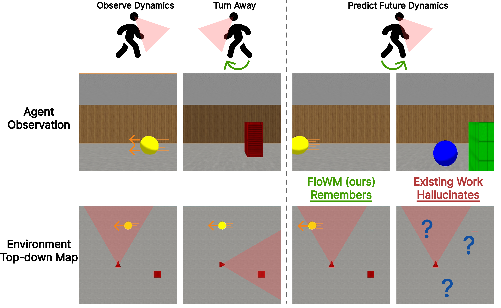
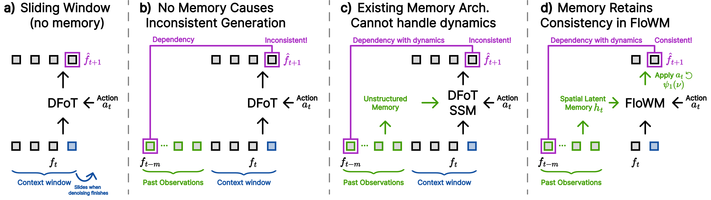
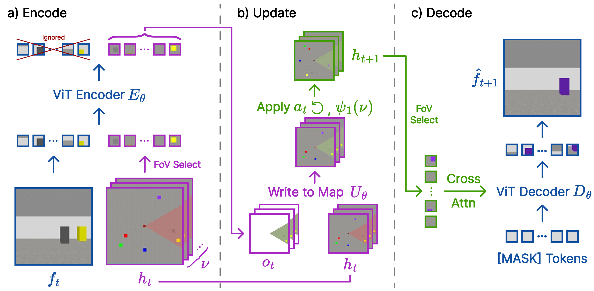
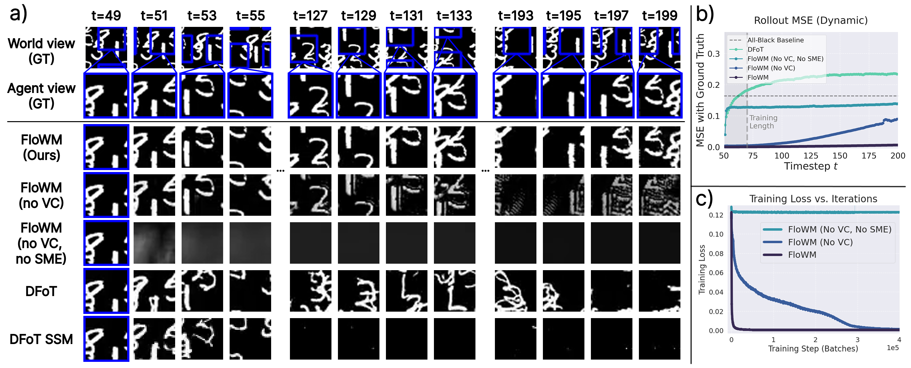
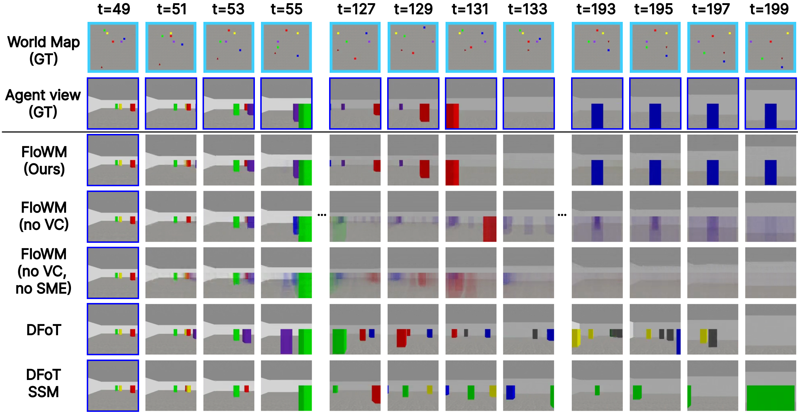
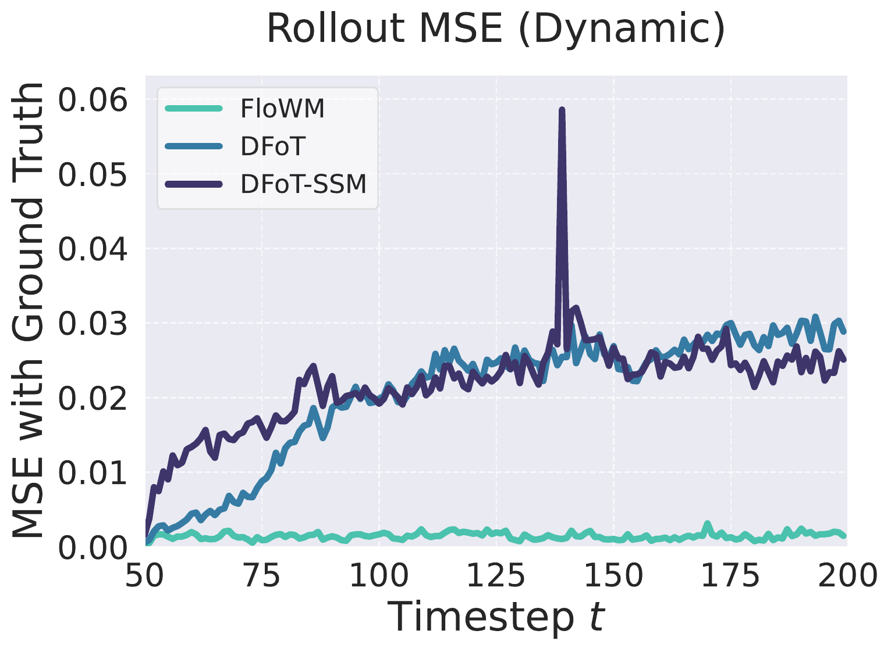

An interactive explainer
Flow Equivariant World Models
Modern video world models learn motion from scratch every time. Pan a camera, and the model has to relearn that "panning right" shifts pixels left. Turn around in a room, and any object that left the view is forgotten — the model freely hallucinates a new scene when you look back. FloWM fixes this by building the symmetry in: both self-motion and the motion of unseen objects become one-parameter Lie-group flows, and the latent map is constructed to flow in unison with the world. The payoff is dramatic. On 2D MNIST-World rollouts, FloWM lands an MSE of 0.0018 at 150 steps where the strongest diffusion baseline gets 0.21 — a 100× gap, generalizing 7.5× beyond the training horizon.

An agent walks into a room. There is a yellow ball drifting across the floor. The agent watches it for a moment, then turns to look at the opposite wall. Five seconds later, the agent turns back. Where is the ball now?
Any human, with no special training, predicts the answer with ease. The ball drifted at some velocity for some amount of time, so it's now somewhere else along the same line. We can do this because the part of our brain that holds "the world" doesn't get switched off when our eyes turn. It keeps integrating the world's dynamics, including the dynamics of things outside the field of view. When we look back, we already know.
Modern video diffusion models have no such organ. They are big sequence transformers that look at the last N frames in a sliding window and predict the next frame. When the ball leaves the window — by leaving the view, or simply by being too far in the past — it's gone. Turn back, and the model will cheerfully draw a different ball, somewhere else, possibly a different color. It has no way to integrate dynamics that aren't currently in its receptive field, because nothing in the architecture corresponds to "the world as it is now, including the parts I can't see."
Flow Equivariant World Models (FloWM) is a clean architectural answer to this problem. Instead of hoping a big transformer learns the right invariances from billions of frames, the model is built so that its latent state literally flows in step with the world. Motion of the agent and motion of external objects are unified as flows on a Lie group — the same mathematical object — and the network is forced to be equivariant to both. The result is a memory that stays calibrated over hundreds of timesteps without retraining, and a stark empirical gap over every diffusion baseline the authors test.
1. Why current video models fail at this
Before the trick, a quick honest tour of what today's "long-context video models" actually do. The authors compare against two strong baselines: a History-Guided Diffusion Forcing transformer ("DFoT"), and a memory-augmented variant that stacks a Mamba-style state-space model on top ("DFoT-SSM"). Neither is a strawman — both are recent, large, action-conditioned video diffusion models specifically designed for autoregressive rollouts.

The deep problem is not "the window is too short." It's that none of these architectures has a slot in its latent state that corresponds to a particular point in the world. When the transformer sees frame $f_t$, the patch tokens are in the agent's image coordinates — pixel $(50, 100)$ of the camera. They are not in world coordinates. So when the agent turns, the same patch of wall ends up in a different token slot. The model has to learn, from data, that these two tokens "are the same wall." With enough data and enough parameters it can fake this — for short rollouts. But the moment the wall leaves the context window, the binding is lost.
The DFoT-SSM extension makes the context effectively infinite by routing all past observations through a recurrent memory. But the memory has no spatial structure. It's a flat vector that gets updated on every step. When the agent moves left, the memory has no way to "shift right" to keep pointing at the same world location, because nothing in the memory corresponds to a location at all. Adding more memory cells doesn't help; the model is missing a different kind of structure.
2. Flows: motion as a one-parameter group
The first conceptual move is to stop thinking of "motion" as a special thing that happens to videos, and start thinking of it as a group element parameterized by time. This is the perspective of Lie theory, and it turns out to be exactly what a world model needs.
Take a velocity, say "drift right at 0.1 units per timestep." Call it $\nu$. After $t$ timesteps, this velocity has carried any object through the spatial transformation "translate right by $0.1 \cdot t$." That transformation is an element of the 2D translation group $G$. As $t$ ranges over the real line, you get a smooth curve of group elements:
$$ \psi_t(\nu) \;:\; \mathbb{R} \times \mathfrak{g} \to G $$
This curve is called the flow generated by $\nu$. It's a one-parameter subgroup of $G$, and the velocity $\nu$ is an element of the Lie algebra $\mathfrak{g}$ — informally, the "tangent direction" at the identity. Translations, rotations, scalings, and many more transformations of interest are all flows of this form. The key property is composition: $\psi_{t_1}(\nu) \cdot \psi_{t_2}(\nu) = \psi_{t_1 + t_2}(\nu)$. Two seconds of drift followed by three seconds of drift equals five seconds of drift.
Why does this matter for world modeling? Because it gives us a way to talk about the motion of external objects, the self-motion of the agent, and the structure of the latent memory in a single language. They are all flows. The agent's leftward step is $\psi_1(a_t)$. The ball's drift is $\psi_1(\nu)$. The latent map's update is also a flow. The Lie algebra elements compose additively ($\nu_1 + \nu_2$), so multiple simultaneous motions stack naturally.
With this vocabulary in hand, we can ask a precise question about the model: what should happen to its output when we apply a flow to its input?
3. Flow equivariance, in one line
Group equivariance is a venerable idea: a function $\phi$ is equivariant if transforming the input by some $g \in G$ produces the same output as transforming the output by $g$:
$$ \phi(g \cdot f) = g \cdot \phi(f), \quad \forall g \in G. $$
The classic example is a translation-equivariant convolution: shift the input image right by 5 pixels, and the output feature map shifts right by 5 pixels too. Equivariance is structurally stronger than invariance, because it preserves where things are rather than throwing that information away.
Flow equivariance generalizes this to sequence-to-sequence models. A model $\Phi$ mapping $(f_0, \dots, f_T) \mapsto (y_0, \dots, y_T)$ is flow equivariant if applying a flow $\psi_t(\nu)$ to the input sequence produces the same flow applied to the output sequence, frame by frame:
$$ \Phi\!\left(\{\psi_i(\nu) \cdot f_i\}_{i=0}^T\right)_t \;=\; \psi_t(\nu) \cdot \Phi\!\left(\{f_i\}_{i=0}^T\right)_t, \quad \forall t. $$
In words: if every input frame at time $i$ has been pushed by $i$ timesteps of velocity $\nu$, then the output at time $t$ should equal the output you would have computed without the flow, but then pushed by $t$ timesteps of $\nu$. The model's predictions stay in step with the world's motion, automatically.
This is a beautifully strong constraint. It says the model cannot get "out of sync" with the world's dynamics — not for one velocity, not for ten thousand. The architecture either has this property or it doesn't, and you can read it off the weights without running a single experiment.
Now we have the goal: construct a sequence model whose architecture guarantees Equation (3) holds. The next two sections walk through the two ingredients FloWM uses to get there.
4. Velocity channels: a memory for each possible motion
Here's a puzzle. You're a recurrent model, and you want to be flow equivariant to any velocity $\nu$ an object could have. But at observation time, you don't know which velocity the object is moving at — you just see a frame. How can you commit to flowing the memory at the right rate?
The Flow Equivariant RNN trick: don't commit. Have one hidden state for each candidate velocity, and let them all flow in parallel. The hidden state $h_t$ becomes a stack of "velocity channels" $h_t(\nu)$, one per $\nu$ in a discrete grid $V$. Each channel is updated by its own flow:
$$ h_{t+1}(\nu) \;=\; \sigma\!\left(\psi_1(\nu) \cdot h_t(\nu) + f_t\right) $$
Whenever a new observation $f_t$ arrives, the encoder writes it (the same content) into all velocity channels — the "trivial lift" condition. Then each channel evolves at its own rate. After a few steps, the channel whose $\nu$ matches the object's true velocity stays aligned with the object's actual position; the others drift away.
The magic is that you don't need to know the true velocity in advance. The right channel self-organizes through training: the decoder learns to read from whichever channel is currently consistent with the observation, typically via a max-pool over velocity channels at the readout. The reader of this blog is welcome to find this beautiful; the authors of the paper certainly did.

When you also let the input flow — i.e., the agent itself moves, applying $\psi(\hat{\nu})$ to the input sequence — the hidden state's velocity channels permute by the difference between the channel's velocity and the input's velocity:
$$ h_t\!\left[\psi(\hat{\nu}) \cdot f\right](\nu) \;=\; \psi_{t-1}(\hat{\nu}) \cdot h_t[f](\nu - \hat{\nu}). $$
This is the technical reason the architecture works. The Lie-algebra additivity ($\nu - \hat{\nu}$) is the entire reason a single set of weights can handle the cartesian product of all object motions with all agent motions.
5. Self-motion equivariance: living in the agent's frame
External object motion is now handled. What about the agent's own motion?
The FloWM observation: motion is relative. From the agent's reference frame, the agent stepping left is identical to the entire world stepping right. So we can use the same flow machinery to handle self-motion — with one important advantage. The agent's action $a_t$ is known; we don't have to guess which channel to use. We can just apply the action's flow directly.
The combined recurrence relation, as a single self-motion flow-equivariant update:
$$ \underbrace{h_{t+1}(\nu)}_{\text{next latent}} \;=\; \underbrace{T_{a_t}^{-1}}_{\text{self-action transform}} \;\underbrace{\psi_1(\nu)}_{\text{internal flow}}\; \cdot \; \underbrace{\mathrm{U}_\theta}_{\text{memory update}}\!\Bigl[\,\underbrace{h_t(\nu)}_{\text{prior latent}};\; \underbrace{E_\theta[f_t, h_t](\nu)}_{\text{encoder output}}\,\Bigr]. $$
Stare at this for a moment. The encoder $E_\theta$ takes the current frame and the previous hidden state and produces a per-channel update. The update operator $U_\theta$ combines it with the prior hidden state. Then two flows are applied: $\psi_1(\nu)$ is the internal flow for the $\nu$-channel (external object motion guess), and $T_{a_t}^{-1}$ is the inverse of the action's flow in the latent space (compensating for the agent's own self-motion).
When the action group is 2D translation, the action transform $T_{a_t}^{-1}$ is itself a flow $\psi_1(-a_t)$, and by Lie algebra additivity the two flows merge into a single combined $\psi_1(\nu - a_t)$:
$$ h_{t+1}(\nu) \;=\; \psi_1(\nu - a_t)\,\cdot\,\sigma\!\left(\mathcal{W}\!\star h_t(\nu) + \mathrm{pad}\bigl(\mathcal{U}\!\star f_t\bigr)\right) $$
This is the entire recurrence relation for the 2D Simple Recurrent FloWM. Two convolutions, a nonlinearity, and a flow. The blue dashed window in the figure above is where the encoder writes the observation; the rest of the spatial extent of $h_t$ is "the world outside the agent's view," continuously flowing under $\psi_1(\nu - a_t)$ even though no observation is driving it.
The closure property of group operations gives the framework a satisfying guarantee for free: if the agent's actions return it to a previously observed location, the latent state at that location must be the same. No memory drift, no retraining, no positional encoding tricks. The group structure is doing the bookkeeping.
6. Two instantiations: 2D conv-RNN and 3D ViT
The paper instantiates the framework twice. For 2D worlds (MNIST World, where digits roll across a black canvas and the agent pans around), the entire model is a convolutional RNN with maybe a few hundred thousand parameters and the recurrence above. For 3D worlds (Block World, where the agent navigates a textured room with bouncing colored blocks), the encoder and decoder are Vision Transformers, and the hidden state $h_t$ is a set of spatial tokens organized as a top-down egocentric map of the room.

An interesting honest detail: the 3D ViT encoder is not analytically equivariant. Mapping from a 3D first-person camera to a 2D top-down map is not a group action one can implement structurally without explicit depth unprojection. So the authors let the encoder be learned equivariant — they apply the action and internal flow on every step, and let SGD shape the encoder's weights to respect this. Empirically, the model "becomes equivariant" partway through training, after which the velocity channels kick in and learning accelerates.
For the update operator $U_\theta$, FloWM uses a simple gated combination: each FoV token gets $(1-\alpha) h_t^{(x,y)} + \alpha\, o_t^{(x,y)}$, where the gate $\alpha = \sigma(\mathbf{W}\, \text{concat}[h, o])$ is learned. Tokens outside the FoV are untouched (and just get flowed by the next step's $\psi_1(\nu)$).
The pseudocode in one block
def flowm_step(h, f_t, a_t, encoder, decoder, update, psi, T_action):
# h: hidden map of shape [|V|, H, W, C] (velocity channels × spatial × features)
# f_t: current observation (image)
# a_t: known agent action
# 1. Encode: combine image patches with current FoV tokens of h
o_t = encoder(patchify(f_t), fov(h)) # shape [H_fov, W_fov, C]
# 2. Update FoV cells; leave the rest of the map alone
h_new = h.copy()
h_new[fov_idx] = update(h[fov_idx], o_t) # gated blend per velocity channel
# 3. Apply flows: internal velocity channels + inverse self-action
for nu in V:
h_new[nu] = psi(nu) @ h_new[nu]
h_new = T_action(a_t).inverse() @ h_new # rotates / translates the whole map
# 4. Decode the predicted next image from the new FoV
f_hat = decoder(fov(h_new), mask_tokens)
return h_new, f_hat
That's the entire model. Compare to a video diffusion transformer with billions of parameters, hundreds of context tokens, and no notion of "the world" anywhere in its state — and then look at what happens next.
7. Results: 100× gap and 7× length generalization
On the 2D MNIST World benchmark, the model is conditioned on 50 frames and asked to predict the next 20 (training horizon) or 150 (length generalization) frames. The agent pans around at random while digits roll across the world. Every metric is computed against the ground-truth world evolution.
| Model | MSE ↓ | PSNR ↑ | SSIM ↑ | |||
|---|---|---|---|---|---|---|
| 20 | 150 | 20 | 150 | 20 | 150 | |
| FloWM (ours) | 0.0005 | 0.0018 | 32.99 | 27.56 | 0.990 | 0.981 |
| – no velocity channels | 0.0041 | 0.0334 | 23.83 | 14.77 | 0.958 | 0.773 |
| – no self-motion equivariance | 0.1234 | 0.1317 | 9.09 | 8.81 | 0.037 | 0.013 |
| – neither (plain conv-RNN) | 0.1233 | 0.1333 | 9.09 | 8.75 | 0.037 | 0.015 |
| DFoT (diffusion transformer) | 0.1448 | 0.2111 | 8.39 | 6.76 | 0.405 | 0.243 |
| DFoT-SSM (memory-augmented diffusion) | 0.1277 | 0.1688 | 8.94 | 7.73 | 0.455 | 0.315 |
| all-black baseline | 0.1656 | 0.1654 | 7.81 | 7.81 | 0.357 | 0.356 |
Table 1 from the paper. 50 context frames, predict 20 (training horizon) or 150 (extrapolation). Note: the diffusion baselines barely beat the "predict an all-black image" baseline at the long horizon — they are actively confabulating the wrong scene.
Two things to notice. First, removing self-motion equivariance ("no SME") drops performance essentially to the all-black baseline. Without a structured action transform, the convolutional RNN simply can't learn to bind observations to the right world location, and predictions become garbage. Second, removing velocity channels but keeping SME gives a model that handles static partial observability well (note the reasonable SSIM at 20 steps) but drifts out of sync on longer horizons because it has no machinery for predicting external motion.

On 3D Dynamic Block World — the harder benchmark, with a 3D agent navigating a textured room with bouncing blocks — the headline numbers tell the same story:
| Model | MSE ↓ | PSNR ↑ | SSIM ↑ | |||
|---|---|---|---|---|---|---|
| 70 | 210 | 70 | 210 | 70 | 210 | |
| FloWM (ours) | 0.0006 | 0.0015 | 32.19 | 28.13 | 0.967 | 0.953 |
| – no velocity channels | 0.0076 | 0.0096 | 21.18 | 20.17 | 0.905 | 0.894 |
| – no SME, no VC | 0.0096 | 0.0126 | 20.19 | 18.99 | 0.878 | 0.863 |
| DFoT | 0.0118 | 0.0217 | 19.30 | 16.64 | 0.938 | 0.889 |
| DFoT-SSM | 0.0226 | 0.0226 | 16.46 | 16.46 | 0.888 | 0.888 |
Table 2 from the paper. 70 context frames, predict 70 (training) or 210 (extrapolation). At 210 steps FloWM's MSE is ~14× lower than DFoT.


The textured version of the dataset, with random wall, floor, and block colors, shows the same gap, suggesting FloWM's advantage isn't an artifact of the simple visual setup.
8. The whole story in 15 seconds
Here's the central conceptual picture, animated. A ball drifts across the agent's world. The agent observes for a moment, then turns away. The ball keeps moving. Naively, you'd lose track of it. FloWM's spatial memory has been silently flowing in unison with the world the whole time, so when the agent turns back the ball is right where it should be.
FloWM's latent memory flows under $\psi_1(\nu - a_t)$ on every step, whether or not the agent is looking. The naive memory waits passively for new observations and misses everything that happens behind the agent.
9. Why it works
Look past the formalism, and FloWM is doing three things that no transformer-based video model naturally does. Each is the answer to a specific failure of those models.
1. The memory has spatial structure that matches the world's spatial structure
The latent $h_t$ is not an unstructured vector or a sequence of tokens — it's a 2D map indexed by world coordinates. A particular cell means "the patch of world at position $(x, y)$." This binding is established by construction, not learned. When the agent moves, the map shifts so that world-position $(x, y)$ still lives at the same cell-in-the-agent's-frame. There is no "re-identification" problem because the architecture already knows which cell is which.
2. Group composition gives you closure for free
Because every update is a group element (a flow or an action), composing them yields another group element. Wander around the room and come back to the same spot: by closure, the product of all your action flows is the identity, and the memory is exactly where it started. The same observation produces the same latent. Transformer attention has no such guarantee — wander and return, and you get an approximation of the original embedding, plus noise.
3. Velocity channels factor "what's there" from "how it moves"
The lift-and-flow trick (encode the observation into every channel, then let each channel evolve at its own rate) factorizes the model's job. The encoder only has to figure out what is in the observation. The flows take care of where it will be next, for every possible velocity at once. After a few timesteps the wrong channels stop matching observations and effectively self-prune; the right channel persists. This is why a model with a few hundred thousand parameters can outperform a billion-parameter diffusion transformer on dynamics prediction — the diffusion model is wasting all its capacity learning what FloWM gets for free.
4. The constraint shapes the encoder, too
An honest finding the authors highlight: the 3D ViT encoder isn't analytically equivariant (mapping a perspective image to a top-down map requires depth, which isn't available). But by forcing the recurrence relation to apply $T_{a_t}^{-1}$ on every step, the encoder is implicitly trained to produce updates that look equivariant from the latent map's perspective. Approximate equivariance, learned through architectural pressure, turns out to be enough.
10. What it means
For a long time the dominant story in generative video modeling has been: more data, more parameters, longer context. FloWM is a different story. It says that for embodied prediction — where the input is the egocentric view of an agent that can move — there is a specific kind of symmetry that video transformers are leaving on the table, and putting it in by hand yields gains that are unreachable by scaling.
The gains aren't subtle. At 150 steps of extrapolation the gap to the strongest diffusion baseline is roughly two orders of magnitude in MSE; the diffusion baseline barely outperforms predicting a black image. Training is also an order of magnitude faster, which is a hint about how much of the data budget for current video models is being spent on relearning the laws of motion.
Open problems
- Continuous velocity groups. FloWM uses a discrete grid of velocity channels. Real motion lives in a continuous range. Prior work suggests discrete equivariance is "enough" in practice, but a clean continuous formulation would be more elegant.
- Non-rigid and semantic actions. The framework so far handles rigid, geometric motions: translations and rotations. Articulated bodies, deforming objects, and actions like "open the door" or "pick up the cup" need richer group structures or hybrid approaches.
- 3D world maps. The 3D ViT instantiation uses a 2D top-down map and projects a perspective image into it. A truly 3D voxel map would let the framework handle scenes where floor-plan assumptions break.
- Stochastic dynamics. Current training uses single-step reconstruction loss and predicts a single deterministic future. Combining a flow-equivariant memory with stochastic latent variables (à la diffusion) would let it model multimodal futures.
- Variable-extent maps. The current latent map is egocentric and fixed-size. Open-world environments need maps that can grow and forget.
The bottom line
Most "long-context" tricks for video diffusion are trying to extend the size of the context window. FloWM does the opposite: it shrinks the model and gives it a structured place to put world state. The lesson — that the right architectural prior, motivated by the geometry of the problem, can beat scaling by a hundred times — is bigger than video. Anytime your inputs come from an embodied agent moving through a structured environment, somewhere in your model there is a flow you could be exploiting.